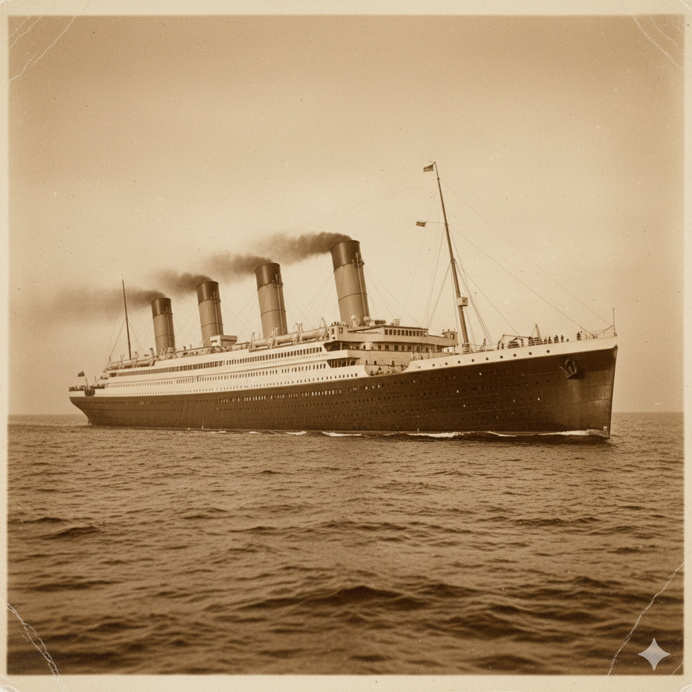

White Star Line • Official Commemorative Record

The RMS Titanic was conceived by the White Star Line as a marvel of Edwardian engineering and luxury. Built in Belfast at the Harland and Wolff shipyard, it was designed to be the largest and most opulent moving object ever created by man. With its grand staircase, Turkish baths, and Parisian-style cafes, the ship was intended to provide a level of comfort that rivaled the finest hotels on land, catering specifically to the world’s wealthiest elite.
Despite its reputation for luxury, the Titanic was also a symbol of technological progress. It featured sixteen watertight compartments and a sophisticated remote control system for its doors, leading many to believe the vessel was "practically unsinkable." This sense of security influenced several critical decisions, including the choice to carry only enough lifeboats for roughly half the people on board, as the deck space was prioritized for aesthetics.
On April 10, 1912, the Titanic set sail from Southampton on its maiden voyage to New York City. The departure was a grand event, with thousands of spectators watching the massive hull pull away from the docks. For the passengers in third class, many of whom were immigrants seeking a new life in America, the ship represented hope and a fresh start, unaware of the maritime disaster that would soon redefine history.
The voyage proceeded smoothly until the night of April 14, 1912. Despite receiving multiple warnings about icebergs in the North Atlantic, the ship continued at high speed through the frigid waters. At approximately 11:40 PM, lookouts spotted an iceberg directly ahead. The crew attempted to turn the ship sharply, but the iceberg struck the starboard side, buckling the hull plates and opening five of the watertight compartments to the sea.
As the ship began to list and sink by the bow, the reality of the situation set in. The evacuation was marred by confusion and the strict adherence to the "women and children first" protocol. Because the crew had never conducted a full-scale lifeboat drill, many boats were lowered partially empty. The icy temperature of the water—roughly 28°F—meant that those who did not make it onto a boat had very little chance of survival once the ship disappeared beneath the waves.
The Titanic found its final resting place on the ocean floor, over 12,000 feet deep. It wasn't until 1985 that the wreck was finally discovered by a joint French-American expedition. Today, the site serves as a somber memorial and a site of intense scientific study. The story of the Titanic continues to captivate the public imagination, serving as a cautionary tale about human hubris and the unpredictable power of nature.